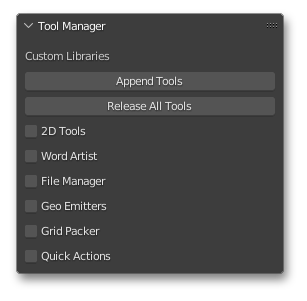

BPX_EXTENSIONS (v1.3)
2022 LUKE STILSON
Blender Pixel Perfect Python Extensions and Asset Library
Created by Luke Stilson 2022
TOOLS DOCUMENTATION
BPX_EXTENSIONS (v2.0)
Tool Manager

After following setup instructions, the tool manager window will be available to you in the Properties UI window of the 3D Viewport ("n" to show/hide).
The Tool Manager window manages instillation of scripts and appending of resource data in the currently open project. Tools remain active automatically each time the project file is opened. This allows for specific tools to be added in specific projects, while not appending unnecessicary resources or scripts in every project.
For tools to function accurately, be sure to close and reopen Blender before starting a new file, or opening an existing file If the File>Open functionality within blender is used after tools are appended, Blender will not clear tools panels that have been appended in the current project, and may cause errors
Append Tools
Click the checkbox for any/all of the tools you would like to add to the current file. Then click the Append Tools button.The selected associated script(s) will automatically be added, ran, and registered as modules (made to be available each time the file is opened).
Some tools, when added, will also automatically append necessicary data from Library\Resources\Extensions\Resources.blend. For example, adding 2D Tools will append a geometry node_group named "bpx_geo". See indivual documentation for each tool to see what (if any) resources are automatically appended.
Everything added through the tool manager panel derives from a specific file locations, based off the path you provide in setup to the \Library folder if there are issues when using the Append Tools button, it is likely your resource path to \Library is incorrect or missing. Do not make file structure or file changes to anything inside the \Library folder
Release Tools
The release tools button cleans out any script previously added, but does not clean out additional appended data, such as node_groups. This means anything created with any of the tools should not be affected, but the functionality of the panel will be disabled the next time the file is opened.This button is useful for applying updates to tools. If you update your resources (through a git pull, or a download of a newer version of these tools), you can "Release Tools" followed by "Append Tools" to update tools in an existing project. Otherwise tools will always remain the same as they were when first added to the project.